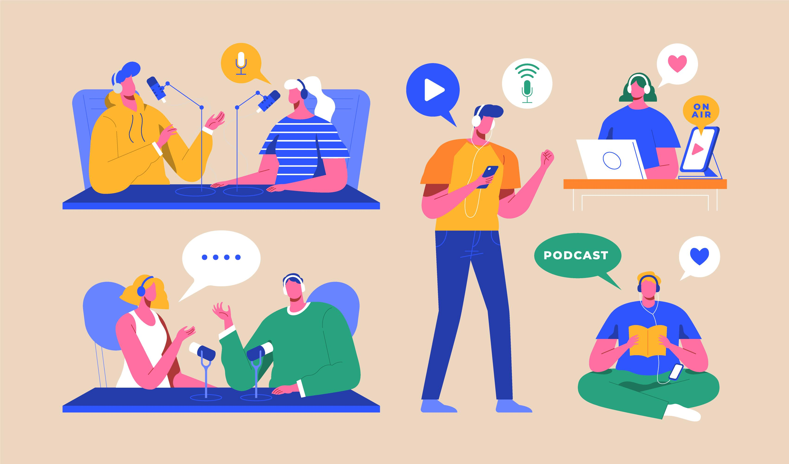

Ya solo queda difundir nuestro trabajo
Una vez terminada la grabación y edición de vuestro podcast, debéis exportarlo en un archivo de audio en formato mp3 y enviarlo a través del siguiente formulario.
Todos los podcast que vayamos creando se suben a nuestro canal de Picasso FM en Ivoox.
Esperad unos días y, si no aparece en la lista de reproducción y no hemos contactado con vosotros, escribid un correo a plancomunica@iespablopicasso.es por si ha habido algún problema.
